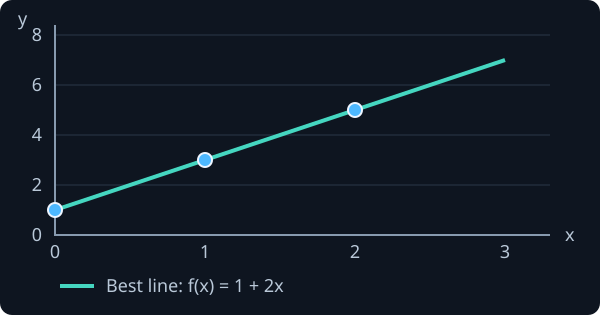
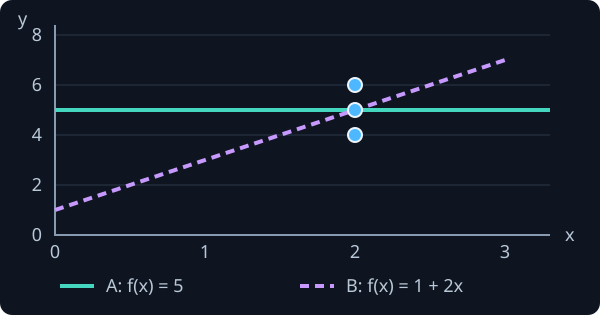
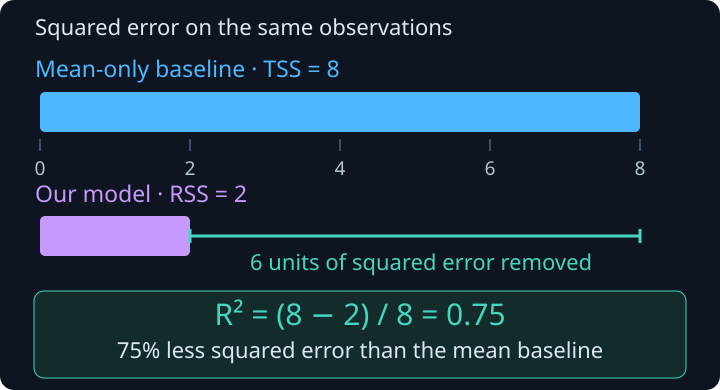
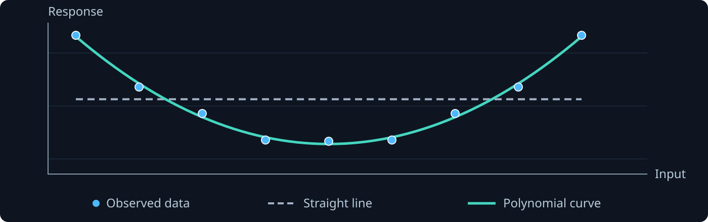
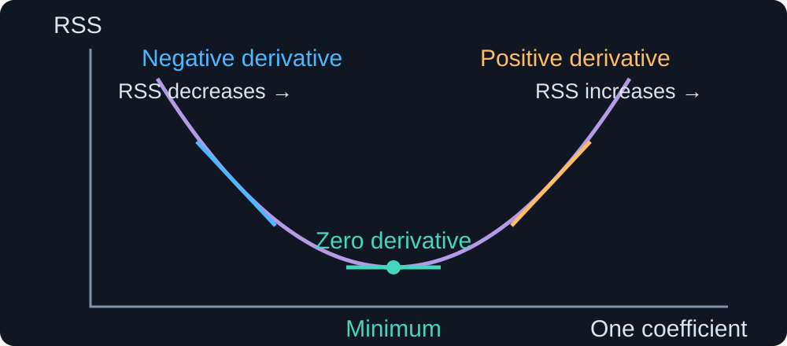

Regression · Part 1
Fitting and evaluating prediction models
Fit numerical predictions and compare simple and flexible models using both training and held-out evidence.
From observations to a fitted prediction rule
Observe → choose a family → fit coefficients → check new-case predictions.
Inspect 25 fertilizer and yield observations
Each dot is one trial: input x = fertilizer, response y = yield. Select a point, zoom or pan to inspect the trend.
Start with a line as an approximate prediction rule
Simple linear regression uses one input to describe a numerical response. We choose a family of straight lines and will learn which line fits the observations.
For each trial i, record input xᵢ and response yᵢ.
Example: fertilizer level and measured yield.
f(xᵢ) is the line’s response at input xᵢ.
β₀ sets its height; β₁ controls its slope.
n = number of training trials
f = prediction function.≈ means “approximately equal”: the observations need not lie exactly on the line.
The same input can give different observed responses
At x = 0, the line’s mean response is 1. This is where the line meets the vertical axis.
At x = 2, the mean is 7; at x = 3, it is 10: an increase of 3. Actual responses can lie above or below those means, so two measured yields need not differ by 3.

Both observations have x = 2. One response is 1 above the line and the other is 1 below it. The line summarizes the typical response, rather than predicting each case perfectly.
Make the approximation explicit: add a random error
Instead of saying only “the response is near a line”, separate the line’s systematic part from the random variation of each observation.
Describes how the mean response changes with x.
The coefficients β₀ and β₁ are unknown.
εᵢ (epsilon) is the deviation of observation i from that mean. It includes unexplained variation, not just measurement mistakes.
Adding εᵢ makes the observation equation exact. It does not make the line’s predictions perfect.
A residual measures one prediction’s vertical miss
Before comparing whole lines, measure how far one prediction is from its observed response.
Observed yield yᵢ = 8; current prediction = 7.
The residual is 8 − 7 = +1: the line predicts too low.
Positive residual: observation above the line.
Negative residual: observation below the line.
Zero residual: this prediction is exact.
yᵢ = observed response
= the current line’s prediction.A residual is a vertical response difference at the same input xᵢ, not a perpendicular distance.
We need one score to compare candidate lines
Moving or tilting a line improves some predictions and worsens others. We need a guiding rule that combines all of their misses.
Residuals: +2 and −2.
The signed sum is 0, but neither prediction is exact.
Squared misses: 4 + 4 = 8.
Residuals: +1 and −1.
The signed sum is also 0.
Squared misses: 1 + 1 = 2.
Residual sum of squares (RSS): square each residual, then add. Candidate B has the smaller score on these same cases.
Least squares adds the squared vertical gaps
Residuals +2 and −2 cancel when added, but contribute 4 + 4 = 8 to RSS.
n = training count. = prediction
rᵢ = observed minus predicted
RSS = residual sum of squares.
Training means choosing the coefficients with the smallest RSS
Ordinary least squares (OLS) is a fitting rule: choose the coefficients that make the sum of squared prediction errors (RSS) as small as possible.
Every squared residual has the same weight.
Fit β₀ and β₁, keeping the observations fixed.
arg min returns the best coefficients.
min returns the smallest error value.
= fitted coefficient pair.ℝ² = all pairs of real numbers
OLS = ordinary least squares.
Move the line and watch the residuals change
β₀ moves the line up or down; β₁ changes its slope. Watch the residuals, then press Fit OLS to minimize RSS.
Where do the slope and intercept formulas come from?
They solve the OLS problem: minimize RSS. Differentiate RSS with respect to β₀ and β₁, set both derivatives to zero, then solve the two equations.
= (1/n)∑yᵢ: training sample means. = fitted slope
= fitted intercept
all sums use i = 1,…,n.
When do the data determine one best-fitting line?
To learn a slope, we need observations at different input values. Here x is the input and y is the observed response.
Trials use x = 0, 1 and 2.

The best slope is 2 and the intercept is 1.
Tilting or shifting this line increases RSS.
All three trials use x = 2. Their responses are 4, 5 and 6.

Both lines predict 5 at x = 2 and have RSS = 2.
These trials cannot tell us which slope to choose.
A best fit can exist without a unique line. If every trial uses the same input, we cannot separate the effects of slope and intercept.
Compare a candidate line with the exact OLS fit
A candidate is a proposed line. We deliberately start with f(x) = 2 + 2x. Press Show OLS best fit to see how minimizing RSS improves this guess.
Model evaluation: what does a good score tell us?
Evaluation uses one or more metrics to assess particular aspects of model quality, such as predictive ability or robustness to noise.
Evaluation can hide pitfalls. A result depends on the metric, the data and how the evaluation was performed.
Interpreting the numbers takes care and experience.
Explaining the data: how well does the model describe the observations?
Generalizing: how well does it predict new instances?
We begin with two popular linear-regression metrics: residual standard error (RSE) and coefficient of determination (R²).
Training performance: how closely does the line fit?
Training performance describes agreement with the observations used for fitting. RSE summarizes the remaining errors in response units.
The line’s height and tilt were chosen using these same observations, making training errors look optimistic. The n − 2 correction accounts for estimating those two coefficients.
On the same observations, a lower RSE means closer predictions. RSE = 2 kg estimates an error standard deviation of 2 kg.
n = number of training observations
i = observation index, from 1 to n.yᵢ = observed response
= fitted line’s prediction
Require n > 2, varying inputs and the stated linear-model assumptions.
RSE ≥ 0 has no fixed upper bound. Its absolute size needs context: is an error scale of 2 kg large for this task?
From RSE to R²: why use a relative measure?
RSE is an absolute measure. Its numerical value alone can be difficult to interpret: when does it indicate a good model?
There is no fixed upper bound.
A “good” RSE depends on the response units, its scale and the task.
Same error scale, different units.
Compare the model’s squared errors with a baseline that always predicts the response mean.

TSS = baseline error. RSS = model error.
R² compares the improvement with the baseline.
RSE asks “How large are the errors?” R² asks “How much better is this model than predicting the mean?”
R²: compare the model with a mean-only baseline
The baseline always predicts : intercept and slope β₁ = 0.
TSS = total sum of squares around the mean.
RSS = sum of squared model prediction errors.
RSS = 0: every prediction matches its observed response.
RSS = TSS: the same squared error as always predicting the mean.
RSS > TSS: more squared error than the mean-only predictor.
Range: −∞ < R² ≤ 1.
Training OLS with an intercept gives R² ≥ 0.
On held-out data, negative R² can be a valid result.
= model prediction, = response mean
n = number of cases, i = case index.No universal “good” threshold: it depends on the task and field.
Outliers (points far from the pattern) can change the score.
Example: RSS = 2, TSS = 8 → R² = 0.75.
Good training fit does not guarantee good prediction
Training fit describes the data used for estimation. To assess prediction on new instances, keep separate data for validation and final testing.
Estimate coefficients and preprocessing.
Compare model families and degrees.
Assess the final chosen procedure.
Use time-aware or group-aware splits when those reflect the real prediction task.
Test performance: root mean squared error (RMSE)
Here we use RMSE as a test-performance metric. Keep the fitted model fixed and compare its predictions with responses in a separate test set.
1. Square each test prediction error.
2. Average over the test cases.
3. Take the square root to return to response units.
Test responses: (3, 5, 7). Predictions: (4, 5, 6).
Squared errors: 1, 0, 1. = 3.
Test RMSE = √(2/3) ≈ 0.82.
= number of test cases
n = number of training cases.yᵢ = observed test response
= fixed model prediction for test case i.
The test data do not fit or select the model. Average over test cases, with no n − 2 adjustment. A lower test RMSE means smaller test prediction errors.
Compare training and test RMSE for a fixed model
The fixed model is scored on 25 training cases and 10 test cases. Test RMSE assesses prediction on unseen cases. The test responses never change the coefficients.
Recap: which question does each score answer?
For a fitted line, keep training fit, estimated noise and prediction on new test cases separate.
RSS
Residual sum of squaresTotal squared prediction error on the training data.
RSE
Residual standard errorEstimated error standard deviation, in response units.
R²
Coefficient of determinationImprovement over always predicting the response mean.
Test RMSE
Root mean squared errorPrediction error on unseen test cases, in response units.
n = number of training cases
= number of test cases. = sum of squared test errors
TSS = squared error of the mean-only baseline
R² requires TSS > 0.
Polynomial regression lets the model follow curved patterns that a straight line would miss.

Why a polynomial is still linear in its coefficients
Choose the degree p first. The input and its powers are known numbers. We learn the coefficients that weight those numbers.
For p = 2 and xᵢ = 2, the features are 1, 2 and 4.
These numbers stay fixed while we fit the β coefficients.
Each coefficient appears only to the first power, as a separate weight on a known feature. The weighted terms are added.
For comparison, is nonlinear in β₁ because the unknown coefficient is squared. Squaring the known input x is allowed.
k = power index, from 0 to p
i = observation index.β₀,…,βₚ = p + 1 learned coefficient weights
xᵢ⁰ = 1 gives the intercept β₀
εᵢ = random error.
Build one row of polynomial features for each observation
If xᵢ = 2, the feature row is [1, 2, 4].
With β = (1, 3, −1)ᵀ, prediction = 1 + 6 − 4 = 3.
The feature values 1, 2 and 4 are fixed numbers, not extra unknowns.
X has n rows and p + 1 columns.
Each column is one power: 1, x, x², …, xᵖ.
p = maximum degree.β = coefficient column
X = expanded design matrix, including ones.
All observations become one matrix equation
y and ε are n-entry columns
β has p + 1 entries.ᵀ = transpose: it swaps rows and columns
ℝ = real numbers.
The i-th entry of Xβ is exactly β₀ + β₁xᵢ + ⋯ + βₚxᵢᵖ.
Fit the coefficients by minimizing the total squared error
Keep the observations fixed. Change the coefficients to make predictions as close as possible to the observed responses.
Smaller means a closer fit to the training observations.
We want the coefficient values that give the smallest score.
β = coefficient column, Xβ = predictions
r = y − Xβ = residual column
yᵢ = response i, = prediction i.n = observations, i = case index
p = degree, so β has p + 1 entries
ℝ = real numbers. A hat marks the fitted choice.
ᵀ = transpose: a column becomes a row.
Both rᵀr and ‖y − Xβ‖₂² mean: square each residual, then add.
A three-observation example: the matrix score is still RSS
Try the proposed line . Here β₀ = 1 and β₁ = 1. These are candidate values, before fitting.
| Input xᵢ | Observed yᵢ | Predicted | Residual rᵢ | rᵢ² |
|---|---|---|---|---|
| 0 | 1 | 1 | 0 | 0 |
| 1 | 2 | 2 | 0 | 0 |
| 2 | 4 | 3 | 1 | 1 |
Transpose it into a row, then multiply matching entries and add.
r = the column of all three residuals.
i = case index, n = observation count (3 here).ᵀ = transpose: a column becomes a row
rᵀr is one number: the total squared error.
Row × column multiplies each residual by itself and adds the results: exactly the definition of RSS.
How do we find the best coefficients ?
We want to choose the coefficients that make the sum of squared residuals as small as possible. How can we do that?
arg min returns the coefficient values. min alone returns the smallest RSS.

p = polynomial degree
RSS = residual sum of squares. means every coefficient derivative is zero
β = coefficient column
X = fixed feature matrix, y = fixed responses.
Least squares gives a bowl-shaped surface, possibly with a flat valley. Zero gradient finds a minimum, which may have tied coefficient choices.
From squared errors to equations for the coefficients
1 · Write the score. The residual column becomes a row times a column. This adds the squared errors.
2 · Expand both brackets. Keep the order of matrix factors. The two middle terms turn out to be equal numbers.
3 · Combine the middle terms. Since yᵀXβ = βᵀXᵀy, they add to −2βᵀXᵀy. This is the matrix version of expanding a square.
4 · Differentiate only β. X and y are fixed. The constant term vanishes, and the quadratic term contributes the factor 2.
5 · Set every derivative to zero, divide by 2 and rearrange. These are the normal equations for the least-squares coefficients.
6 · Final result, when XᵀX is invertible. Multiply both sides on the left by its inverse to isolate the coefficients.
The matrix is the Moore–Penrose pseudoinverse.
β = candidate coefficients, = fitted coefficients
∇β = differentiate with respect to all coefficients.(AB)ᵀ = BᵀAᵀ for compatible matrices A and B
yᵀXβ is one number, unchanged by transposing
X⁺ = Moore–Penrose pseudoinverse.
−1 = matrix inverse, requiring independent columns.
The degree p is a hyperparameter: choose it before fitting. Next, compare polynomial models across different degrees.
Choose the degree, then fit the coefficients
The degree decides which shapes are allowed. Training chooses the best coefficients within that choice.
OLS fits two numbers: β₀ and β₁.
OLS fits three numbers: β₀, β₁ and β₂.
β = coefficient column, including intercept β₀.x = input, f(x) = model’s prediction
A degree-p model has p + 1 coefficients.
A lower training RSS alone does not justify a higher degree. Use validation for the choice and keep the test set for final assessment.
Overfitting and underfitting: what can go wrong?
A model should learn stable patterns that also work on new observations. Its flexibility can create two different problems.
The model fits sample-specific fluctuations in the training data that do not carry over to new cases.
Typical clue: better training fit, worse held-out prediction.
Example: a very flexible polynomial follows small wiggles.
The model is too restrictive to represent the main pattern, even in the training data.
Typical clue: a clear pattern remains unexplained.
Example: a straight line misses a curved relationship.
Increasing flexibility can reduce underfitting but may lead to overfitting. Compare validation performance to choose the polynomial degree.
Overfitting: a flexible curve can follow training noise
Overfitting means learning training details that do not generalize. Compare degrees 1, 5, 15 and 23: inspect the wiggles and the held-out errors.
Overfitting: better training fit, worse prediction
| Degree | Training R² · illustrative curves | Held-out RMSE · illustrative curves |
|---|---|---|
| 1 | 0.9850 | 0.1220 |
| 5 | 0.9878 | 0.1225 |
| 15 | 0.9933 | 0.1548 |
| 23 | 0.9938 | 0.3052 |
Scores describe these supplied curves
high-degree results depend on numerical fitting choices.
Underfitting: a simple model misses the main pattern
Underfitting means the family is too restrictive to capture the signal. Compare p = 0 (constant), 1 (line) and 2 (quadratic) on these curved data.
Recognize underfitting and overfitting from the evidence
The family may be too restrictive.
Also inspect features, label quality and optimization.
Overfitting is one explanation.
Also investigate distribution shift, leakage and an unrepresentative split.
One bad score is a symptom, not a complete diagnosis.
Before you leave this part
- Interpret the intercept, slope and residuals of a line.
- Explain what a fit score does and does not establish.
- Recognize overfitting and underfitting from training and held-out behavior.
Choose one idea and explain it in your own words. Use an example or an interactive experiment to support your explanation.
Five metrics: what does each one tell me?
| Metric | Formula | What does it show me? |
|---|---|---|
| RSSResidual sum of squares | Training misses, squared and added. Smaller means a closer fit to the same cases. | |
| TSSTotal sum of squares | Squared misses from always predicting the response average: the variation available to explain. | |
| RSEResidual standard error | Estimated scatter around the fitted model, in response units (such as kg). | |
| R²Coefficient of determination | Improvement over the average baseline: 1 = perfect, 0 = equal, negative = worse. | |
| Test RMSERoot mean squared error | Typical size of mistakes on new test cases, in response units. Large misses count more. |
= observed response, = prediction
= response mean used for TSS. = training count, = test count
= independent fitted coefficients, including the intercept
For a line . RSE needs . R² needs .
Further reading and practice
An Introduction to Statistical Learning
Chapter 3: linear regression
Penn State STAT 501
NumPy least squares
Rank, solutions and reliable solvers.
Use the local interactive examples to connect formulas, plots and predictions.
Continue the course
Lecture 09 · Regression · Part 1
The slope of RSS as one coefficient changes, keeping the others fixed.
The list of these derivatives: one for every coefficient.
Every derivative is zero. The gradient is the zero vector.